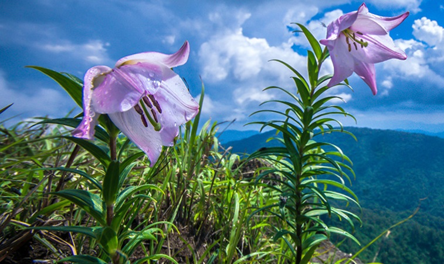

Day 1: Arrival | Route: Imphal City
- Activity: Land in Imphal. Visit the Kangla Fort and the Govindajee Temple for evening aarti.
- Stay: Imphal (Classic Grande or City Hotel).
Described by Lord Irwin as the "Switzerland of India," Manipur is a land of undulating hills surrounding a football-shaped valley. It is the soul of the Meitei culture and home to colorful hill tribes like the Nagas and Kukis. Its history dates back to 33 AD under the deity king Pakhangba.
Manipur is the birthplace of the graceful Ras Leela dance, one of India's classical dance forms. The state represents a unique blend of ancient Sanamahism (worship of nature deities) and Vaishnavism. It is a land where martial arts (Thang-Ta) and artistic delicacy coexist in perfect harmony.
Some Interesting Facts about Manipur:
Loktak Lake: The Floating Wonder
|

|

|
Imphal: The Historic Capital
|
Ukhrul: The Misty Hills
|
 |

|
Moirang: The Freedom Hub
|
1. By Air
|
2. By Rail
|
|
3. By Road
The road to Manipur is an adventure in itself.
|
Choose Your Vibe
The Classic Valley CircuitBest for: Families, history buffs, and leisure travelers.Day 1: Arrival | Route: Imphal City
Day 2: Mothers & Warriors | Route: Imphal Local
Day 3: The Floating Lake | Route: Imphal ➔ Moirang ➔ Loktak
Day 4: Dancing Deer | Route: Keibul Lamjao
Day 5: Departure
|
The Hills & Nature CircuitBest for: Trekkers, nature lovers, and explorers.Day 1: Arrival | Route: Imphal
Day 2: Up the Hills | Route: Imphal ➔ Ukhrul
Day 3: The Lily Trek | Route: Shirui Peak
Day 4: Cave Exploration | Route: Khangkhui Caves
Day 5: Return to Valley | Route: Ukhrul ➔ Andro ➔ Imphal
Day 6: Departure
|
| Time | Best For |
|---|---|
| November | Sangai Festival: The biggest cultural festival of the state (Nov 21-30). |
| October to March | Pleasant weather, clear skies, and great for sightseeing. |
| May to June | Best for seeing the blooming Shirui Lily in Ukhrul. |
Important things to know before you pack your bags.
Manipur has implemented the ILP system. All non-native visitors (Indian citizens) must obtain a permit.
Manipur is in the far east. The sun rises as early as 4:30 AM and sets by 4:30 PM in winter. Plan your days early. Most markets close by 6:00 PM or 7:00 PM.
While tourism is growing, there is heavy security presence in certain areas due to its border location. Always carry your original ID (Aadhaar/Voter ID) and permit. Cooperate politely at Assam Rifles or Police check-posts.
Manipur is socially conservative. When visiting temples like Govindajee, modest dress is required. For the Kangla Fort, walking shoes are recommended as the complex is huge.
Manipuri cuisine uses a lot of fermented fish (Ngari) and bamboo shoot. If you are vegetarian, specifically ask for "Veg-without-fish" or stick to the Vaishnavite Hindu hotels which serve pure vegetarian food.
Internet shutdowns can occasionally happen during times of unrest. Carry some cash and keep offline copies of your tickets and permits. Airtel and Jio generally have good 4G coverage in the valley and district headquarters.